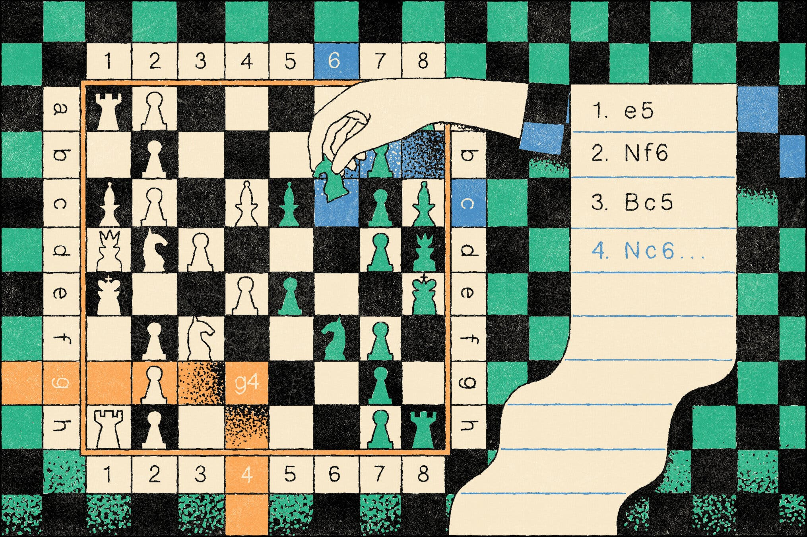

- ML Conference Deadline
- ML Conference Deadline カウントダウン
- 🤗AK-Huggingface Daily Papers
- 📟 Paper Implementations
- Conference List
Welcome to my Blog & Research Note

Writing is a nature's way of letting you know how sloppy your thinking is.
Dick Guindon
I’m using this blog to document my research and learning notes. (Some of the pages take a long time to load. I'm not sure why, but I will investigate this when I have time).
Medium
Blog
ブログ
Useful Links